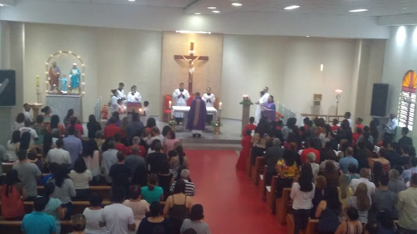

Horários de Funcionamento
Missas
Domingos
7:30
18:00
Segunda-feira
20:00
Quinta-feira
20:00
Devoção ao Sagrado Coração de Jesus
Primeira Sexta-feira do mês
6:30
Confissões
Quarta-feira
14:30 - 16:00
Sábado
09:30 - 11:00
Deixe suas intenções
Envie para nós suas intenções para serem ofertadas a Deus em nossas missas
Uma oração por você, caso não possa receber a Eucaristia :